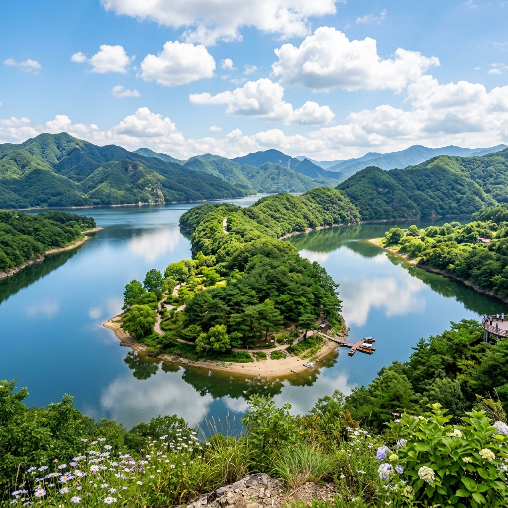
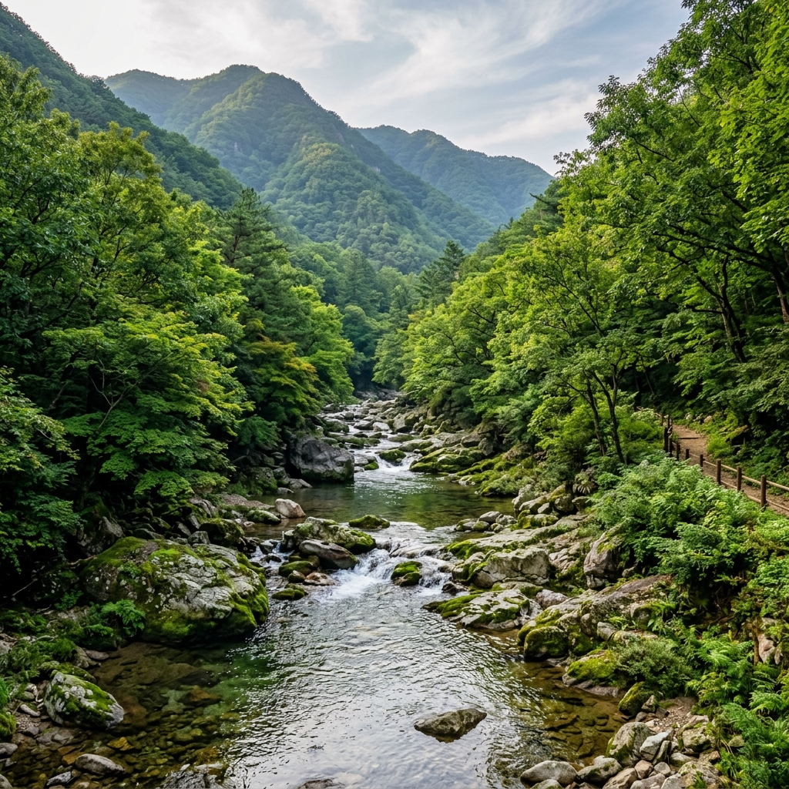
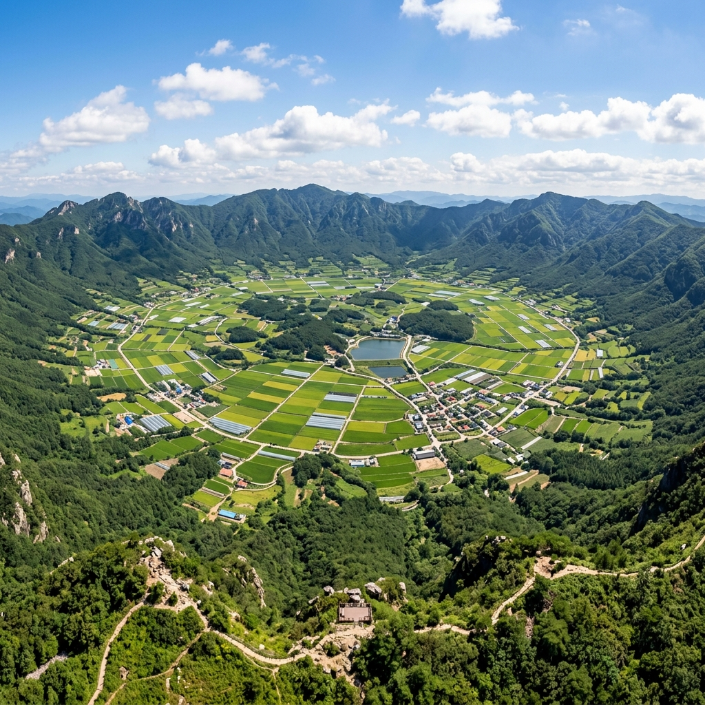
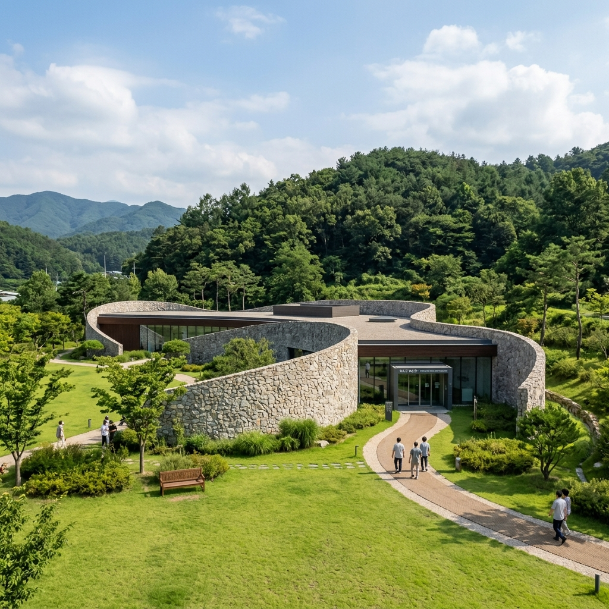

MUST VISIT
양구 대표 관광 명소
발길 닿는 곳마다 그림이 되는 양구의 숨은 보석들을 만나보세요.

한반도섬
파로호 상류에 조성된 국내 최대 규모의 인공 습지로, 한반도 모습을 닮아 붙여진 이름입니다.

두타연
민간인 통제구역 내에 위치하여 50여 년간 숨겨져 있던 천혜의 자연을 간직한 생태계의 보고입니다.

해안분지 (펀치볼)
해발 400~500m 고지대에 발달한 거대한 분지로, 화채 그릇을 닮았다 하여 펀치볼이라 불립니다.

박수근미술관
한국의 대표적인 서민 화가 박수근 화백의 생가터에 건립된 아름다운 건축미를 자랑하는 미술관입니다.
YANGGU 9 VIEWS
양구 9경 테마여행
양구의 아름다운 9가지 숨겨진 명소를 만나보세요.
1경 양구수목원
2경 한반도섬
3경 두타연
4경 박수근미술관
5경 양구백자박물관
6경 펀치볼
7경 양구 봉화산
8경 상무룡출렁다리
9경 광치계곡
TOURIST MAP
양구 관광 지도
한눈에 보는 양구군의 주요 관광 명소